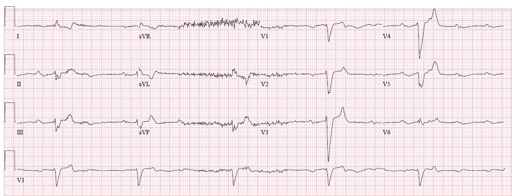
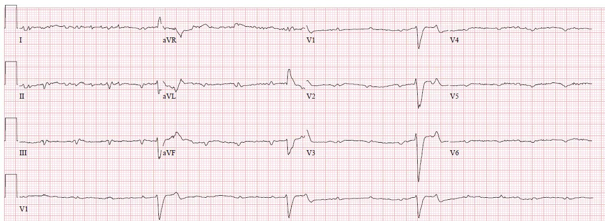
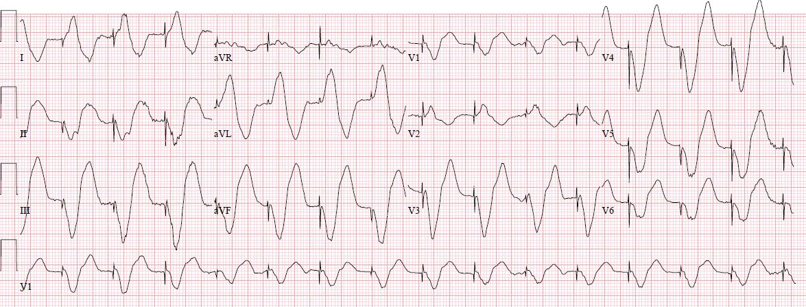
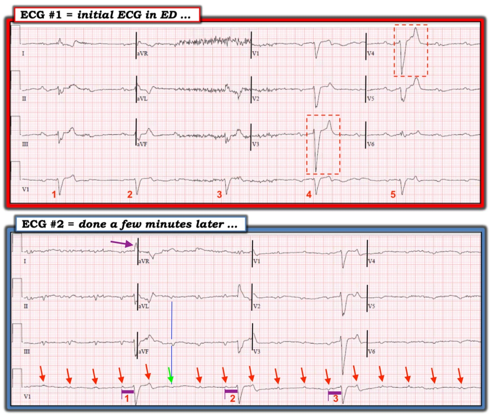

13/01/2019 — Bạn sẽ làm gì cho bệnh nhân rối loạn ý thức và nhịp chậm này?
Bản dịch tiếng Việt của bài "What will you do for this altered and bradycardic patient?" – Dr. Smith’s ECG Blog. Giữ nguyên toàn bộ 6 hình ảnh của bản gốc.
Bài viết của Pendell Meyers
Một phụ nữ ở độ tuổi 60 có tiền sử bệnh phổi tắc nghẽn mạn tính (COPD), đái tháo đường, suy giáp, bệnh động mạch vành (CAD) và ung thư bàng quang nặng, được chuyển đến từ viện dưỡng lão vì rối loạn ý thức (altered mental status), hạ huyết áp, thiếu oxy và nhịp chậm.
Đây là điện tâm đồ ban đầu của bệnh nhân (không có bản cũ để so sánh):


Đây là một điện tâm đồ khác ghi vài phút sau:


Có các sóng P với tần số khoảng 100 nhịp/phút, không có mối liên hệ rõ ràng với các phức bộ QRS, đủ để chẩn đoán blốc tim hoàn toàn (xem phần đính chính bên dưới!).
Hình thái QRS rộng (thời gian QRS theo máy tính là 179 msec) nhưng không khớp với bất kỳ hình ảnh blốc nhánh rõ ràng nào (giống LBBB nhưng không thực sự là LBBB).
Sóng T ở các chuyển đạo trước tim nhọn. Nhìn chung, hình ảnh này rất đáng lo ngại, nếu không muốn nói là đủ để chẩn đoán, tăng kali máu (hyperkalemia).
Đính chính quan trọng của Dr. K Wang:
“Nhân tiện, đây không phải ngay là blốc AV hoàn toàn vì các QRS không xuất hiện đều đặn. Trong blốc AV hoàn toàn, các QRS xuất hiện đều đặn dù đó là nhịp thoát bộ nối hay nhịp thoát thất. Trong ca này, thực ra các QRS đều có một sóng P đứng trước với khoảng PR giống hệt nhau, cho thấy tỷ lệ dẫn truyền AV 3:1 ,4:1 hoặc mức độ cao hơn. Dù sao đi nữa, điều quan trọng nhất về mặt lâm sàng ở bệnh nhân này là nhận ra rằng sóng T ở V3 trên bản ghi đầu tiên có dạng lều, nhọn, rất gợi ý tăng kali máu, một tình trạng đe dọa tính mạng, và quả thực đúng là như vậy. Đúng vậy, các QRS do máy tạo nhịp tạo ra rất rộng và sóng T rất cao, một lần nữa khiến người ta phải nghi ngờ tăng kali máu.”
Blốc tim (thuộc một dạng nào đó) đã được nhận ra, nhưng tăng kali máu thì ban đầu không được nhận ra. Bệnh nhân được dùng epinephrine liều bơm nhanh (push dose) và atropine nhưng không có thay đổi. Đã thử tạo nhịp qua da (external pacing) nhưng thất bại.
Sau đó, một máy tạo nhịp qua tĩnh mạch (transvenous pacemaker) được đặt, và đã bắt nhịp được:


Kết quả kali đầu tiên được phòng xét nghiệm báo là mẫu bị tan máu.
Bệnh nhân được truyền epinephrine liên tục. Tình trạng ý thức cải thiện sau khi tạo nhịp và truyền epinephrine liên tục.
Sau đó kết quả kali lần hai trả về là 8,1 mEq/L. Xét nghiệm xác nhận suy thận mới xuất hiện.
Khoảng thời gian này, gia đình bệnh nhân đến và giải thích rằng mục tiêu chăm sóc của bệnh nhân là chăm sóc giảm nhẹ. Chăm sóc giảm nhẹ (comfort care) được tiến hành. Bệnh nhân tử vong.
Những điểm cần học:
Tăng kali máu là một nguyên nhân quan trọng gây nhịp chậm và blốc tim.
Đừng bao giờ đặt máy tạo nhịp qua tĩnh mạch mà không nghĩ đến tăng kali máu và không thử dùng calci tĩnh mạch.

==================================
Bình luận của KEN GRAUER, MD (13/1/2019):
==================================
Một ca bệnh tuyệt vời với những điểm giảng dạy thiết yếu của Dr. Pendell Meyers, đã được nhấn mạnh rất nhiều lần trên blog của Dr. Smith, nhưng chưa bao giờ thôi sâu sắc và bổ ích. Như Dr. Meyers đã nhấn mạnh — Tăng Kali máu là một nguyên nhân quan trọng gây nhịp chậm và blốc tim! Cần ưu tiên cao cho chẩn đoán này bất cứ khi nào bối cảnh lâm sàng có thể phù hợp với nó.
- Mục đích của Bình luận của tôi là minh họa một vài gợi ý nâng cao trong việc diễn giải rối loạn nhịp trên lâm sàng. Mặc dù không gợi ý nào trong số này là “cần thiết” cho những điều cốt yếu trong chẩn đoán và xử trí ca này — việc nắm được những ĐIỂM THEN CHỐT (PEARLS) về Điện tâm đồ & Rối loạn nhịp này có thể tỏ ra vô cùng quý giá khi đánh giá và xử trí các ca khác.
- Để cho rõ ràng — tôi đã đánh dấu 2 bản ghi đầu tiên trong ca này (Hình 1):


=========================
Suy nghĩ của tôi ( = ý kiến của tôi) như sau:
- Như Dr. Meyers đã nêu — nhịp trên điện tâm đồ ban đầu (=Điện tâm đồ #1) chậm và không đều với tần số trong khoảng 30-40 lần/phút. QRS rất rộng. Nhiễu đường nền khiến không thể nhận diện hoạt động nhĩ một cách đáng tin cậy. Tôi cho rằng điều quan trọng là phải nhận ra khi nào nhiễu cản trở việc xác định nhịp — và phải ghi rõ điều này trong phần diễn giải bằng văn bản của bạn.
- Trong hoàn cảnh bình thường (tức là khi bệnh nhân không bị tăng kali máu rõ rệt) — một trong những gợi ý hữu ích nhất để nhận ra một nhịp không phải là blốc AV hoàn toàn là khi đáp ứng thất không đều. Rất thường gặp — các nhát xuất hiện sớm hơn dự kiến trong một nhịp vốn đều là các nhát được dẫn truyền. Tuy vậy, tôi nhận thấy quy tắc chung này không còn đúng lắm khi có bất thường chuyển hóa rõ rệt, như trường hợp ở đây. Vì vậy, do không có hoạt động nhĩ đáng tin cậy trên điện tâm đồ #1 — tôi không tin có thể rút ra kết luận gì về nhịp ngoài việc nói rằng có một nhịp chậm rõ rệt, hơi không đều, với QRS rộng.
- Để làm nổi bật điểm Dr. Meyers đã nêu về hình thái sóng T — tôi đã khoanh trong các hình chữ nhật chấm ĐỎ các phức bộ QRS ở chuyển đạo V3 và V4 của điện tâm đồ #1. Lưu ý rằng sóng T của 2 phức bộ QRS này cực kỳ mảnh, nhọn ở đỉnh, và có đáy hẹp. Chính 2 sóng T này phải ngay lập tức làm tăng mức nghi ngờ tăng kali máu của bạn. Sóng T ở những chỗ khác trên cả hai bản ghi này cho thấy mức độ nhọn nhiều hơn bạn có thể nghĩ — nhưng không sóng T nào gợi ý tăng kali máu một cách ấn tượng như các sóng T nằm trong các hình chữ nhật chấm ĐỎ.
- Hình thái QRS trên điện tâm đồ #1 có khả năng phù hợp với LBBB — vì có phức bộ QRS dương hoàn toàn ở chuyển đạo I — có ưu thế âm với sườn xuống của sóng S khá dốc ở các chuyển đạo phía trước — và có QRS dương (dù nhỏ) ở chuyển đạo V6. Một số bệnh nhân LBBB không chuyển sang sóng R dương hoàn toàn cho đến chuyển đạo V7 hoặc V8 — vì vậy hình ảnh trên điện tâm đồ #1 là phù hợp với LBBB.
- Hoạt động nhĩ rõ ràng có hiện diện trên Điện tâm đồ #2! Mặc dù vẫn còn nhiễu đường nền đáng kể — các mũi tên ĐỎ dọc theo dải nhịp dài chuyển đạo V1 cho thấy một nhịp nhĩ khá đều với tần số hơi trên 100 lần/phút. Tôi đã đặt một mũi tên XANH LÁ tại vị trí trên dải nhịp dài V1 mà ở đó không thấy sóng P ở chuyển đạo V1 — nhưng — chúng ta biết rằng một sóng P đều đặn có xuất hiện tại điểm này, vì chúng ta có thể thấy rõ nó ở các chuyển đạo aVL và aVF ghi đồng thời (các đường thẳng đứng XANH DƯƠNG). ĐIỂM THEN CHỐT (PEARL) — Nếu bạn chưa làm vậy, hãy HỌC cách sử dụng các chuyển đạo ghi đồng thời khi đánh giá các rối loạn nhịp khó!
- Chỉ có 3 phức bộ QRS trên dải nhịp dài chuyển đạo V1 của điện tâm đồ #2. Tuy vậy, khoảng PR (đường ngang dày màu TÍM) là NHƯ NHAU ở cả 3 nhát này. Liệu điều này là do tình cờ … — hay nó cho thấy có dẫn truyền ở 3 nhát này thì không thể xác định được chỉ từ một bản ghi duy nhất này. Nhưng NẾU một thời gian theo dõi dài hơn xác nhận rằng khoảng PR đứng trước mỗi phức bộ QRS xuất hiện đều giống hệt với khoảng PR thấy trên điện tâm đồ #2 — thì nhịp sẽ là blốc AV độ 2 Mobitz II (và không phải blốc AV hoàn toàn). Và nếu nhịp trên điện tâm đồ #2 là Mobitz II — thì chúng ta đang thấy một biểu hiện cho thấy vì sao Mobitz II là một nhịp có khả năng gây tử vong, vì hoàn toàn không có phức bộ QRS nào trong 3 giây cuối của điện tâm đồ này!
- LƯU Ý: Như tôi đã nói từ đầu — việc xác định chính xác nhịp trên 2 bản ghi này không thiết yếu về mặt lâm sàng, vì bất kể nhịp là gì, bệnh nhân này có nhịp chậm đe dọa tính mạng kèm một dạng blốc AV nào đó do tăng kali máu có khả năng điều trị được. Ý của tôi chỉ đơn giản là minh họa việc chúng ta không thể phân biệt giữa nhịp tự thất không đều với một dạng blốc AV nào đó trên điện tâm đồ #1 — và việc chúng ta không thể phân biệt giữa Mobitz II mức độ cao với một nhịp khác trên điện tâm đồ #2.
- Hình thái QRS trên điện tâm đồ #2 vẫn có khả năng phù hợp với LBBB. Tôi đã vẽ các đường thẳng đứng màu ĐEN để minh họa điểm chuyển chuyển đạo. Lưu ý rằng nhát #1 trên điện tâm đồ #2 xuất hiện ngay tại điểm chuyển chuyển đạo đầu tiên — và QRS dương hoàn toàn ở chuyển đạo I (mũi tên TÍM). QRS có dạng qR ở chuyển đạo aVL trên điện tâm đồ #2, điều này cũng phù hợp với LBBB — một lần nữa có ưu thế âm ở các chuyển đạo phía trước, với sườn xuống của sóng S dốc (phù hợp với LBBB) — và hoàn toàn không có phức bộ QRS nào xuất hiện ở các chuyển đạo V4,V5,V6. Việc bệnh nhân này có LBBB nền hay chỉ là hình ảnh QRS giãn rộng đơn thuần do tăng kali máu chỉ có thể xác định được nếu ghi lại điện tâm đồ sau khi K+ đã trở về bình thường.